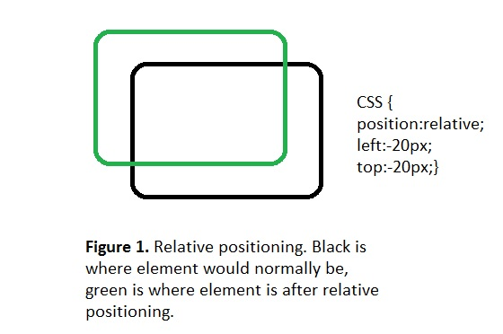
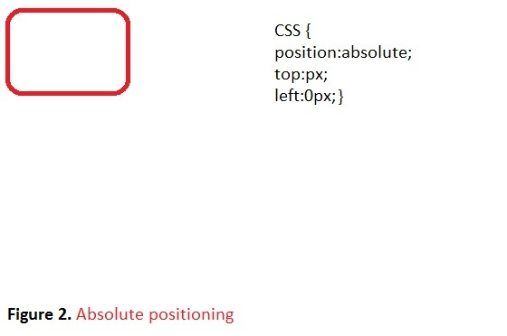
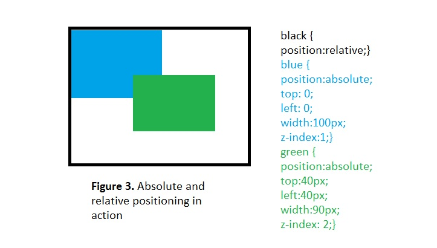
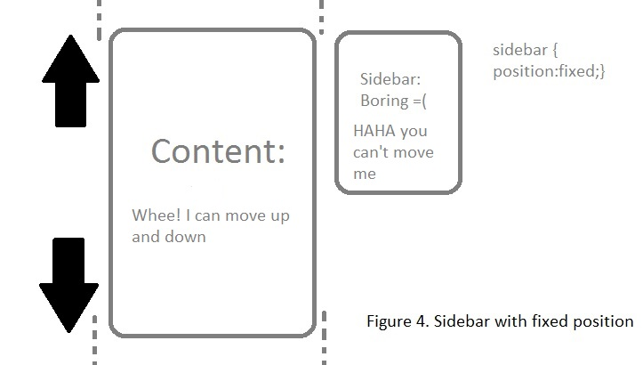

Positioning in CSS
Elements on a website can be positioned behind, in front of, or next to by using CSS positioning properties: top, left, right, and bottom . Static positioning isn't mentioned too often with relative, absolute, or fixed positioning because it's the default positioning an element has when the element has no specified positioning.
Relative Positioning
An element that is positioned "relative" to its normal position or flow has relative positioning. Take a look at figure 1 (not to scale). We moved the element to the left and towards the top by adjusting the left and top propertiesb y setting -20px to the top and left properties.

Absolute Positioning
Absolute positioned elements are always displayed in the same manner regardless of screen resolution nor normal position. They can also be positioned "relative" to its parent element. The element will show in the exact location each time it is loaded. One important thing to note here is absolute positioned elements can have the "z-index" property which allows overlapping elements. Elements with the higher z-index is displayed on top of the element with the lower index.

Figure 1 shows the code for absolute positioning the element to the top left of the screen.

Figure 2 shows the black div as the parent element to the green and blue divs. With the black div set to relative position, the child elements are set to absolute positioning so that they can be positioned relative to the black div. Green div is shown overlapping the blue div because it has a higher z-index.
Fixed Positioning
An element with fixed positioning has a permanent position in the window screen. This means even when you scroll up or down, all other elements that don't have a fixed position move but the fixed element doesn't.

About Me

Hi there I'm Ricky and a novice coder with a will to learn. You couldn't tell by my picture or in real life that I am several years older than I look, oh the gift/curse of being a small asian. Feel free to check out my rants and rambles.